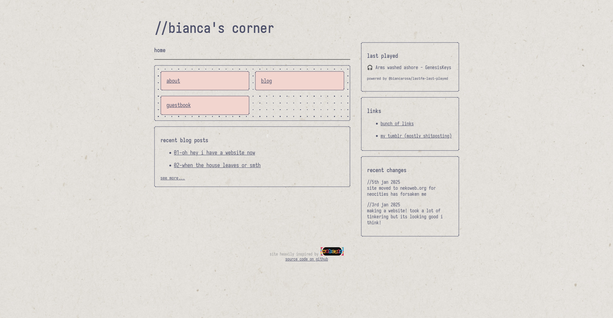

ok so this was the very first version of the website, which uh, is basically, like... me trying as hard as i could to replicate an old version of june's website? i liked the sketchbook aesthetics, i guess i got kinda close... but it didn't exactly look great lol. here i was actually kinda struggling to think of stuff to put on the site, so i was just playing around with the layout.